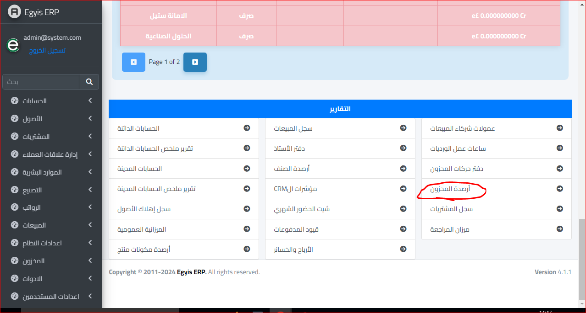
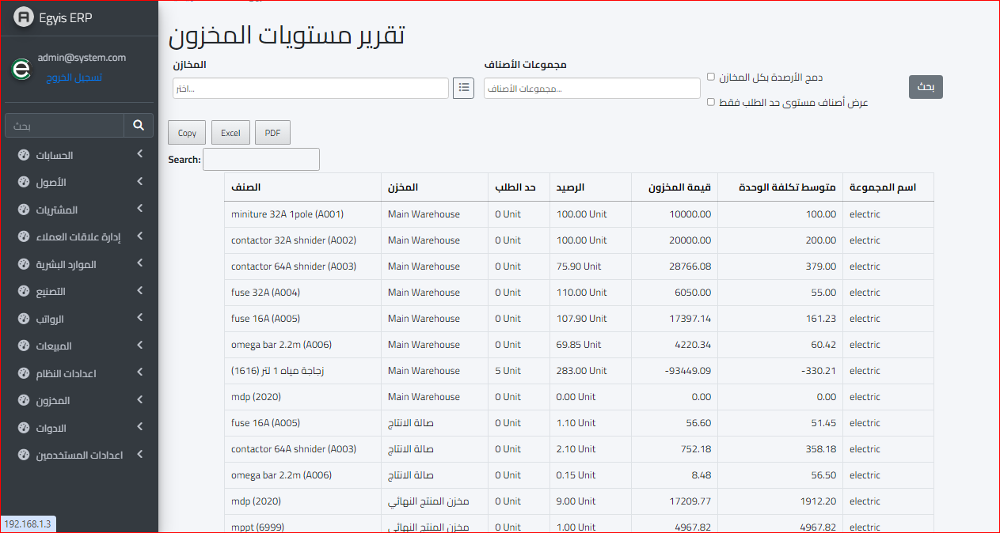

ارصدة المخزون
ويمكن عرض ارصدة المخزون او جميع المخازن الخاصة بالشركة عن طريق النزول اسفل القائمة لعرض التقارير واختيار قائمة أرصدة المخزون كالشكل التالي :
وعند فتح قائمة ارصدة المخزون نتوجه مباشرة إلى الشاشة التالية :
وتوضح هذه الشاشة تقرير مفصل عن جميع الأصناف والمخازن ويمكن ايضا اعداد فلتر للبحث عن طريق تحديد المخازن ومجموعات الأصناف والنقر بحث